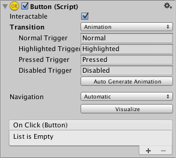
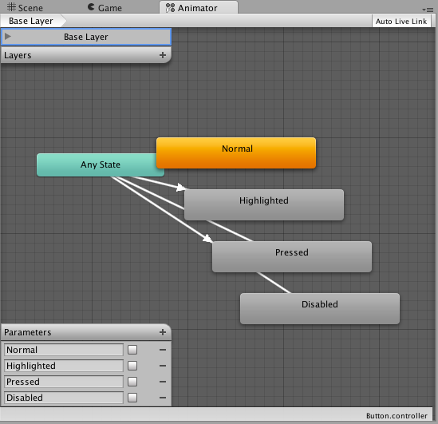
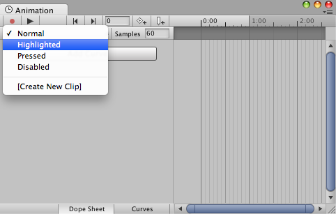

Animation 允许使用 Unity 动画系统，为控件状态之间的每次转换制作完整动画。由于可以同时动画化多个属性，它是功能最强的 Transition 模式。

要使用 Animation 转换模式，必须在控件元素上添加 Animator Component。单击 Auto Generate Animation 可自动添加，同时生成已配置好状态的 Animator Controller；需要将此控制器保存。
新生成的 Animator Controller 可以立即使用。与多数 Animator Controller 不同，它还存储控件状态转换所需的动画，必要时可以自定义这些动画。

例如，选中带有 Animator Controller 的 Button 元素，然后打开 Animation 窗口（Window > Animation），即可编辑按钮各状态的动画。
通过 Animation Clip 下拉菜单选择要编辑的片段：Normal、Highlighted、Pressed 或 Disabled。

Normal 状态使用按钮元素本身的属性值，因此动画可以留空。其他状态通常只需在时间轴起点设置一个关键帧，状态之间的过渡动画由 Animator 处理。
例如，要改变 Highlighted 状态下按钮的宽度，在 Animation Clip 菜单中选择 Highlighted，将播放头放在时间轴起点，然后：
- 单击录制按钮（Record）。
- 在 Inspector 中修改 Button 的宽度。
- 退出录制模式。
进入 Play Mode，即可看到按钮在高亮时变宽。
同一个关键帧可以设置任意数量的属性参数。
多个按钮可以共用同一个 Animator Controller，从而共享相同的行为。
UI 的 Animation 转换模式不兼容 Unity 的旧版动画系统（Legacy Animation）；应使用 Animator Component。